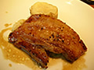
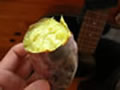

10月23日：黒豚ばら肉グリルその他
原宿kurkku kitchenにて黒豚ばら肉グリルその他を食す。またまた久しぶりのkurkku kitchenです。あはははは、うんまい！鹿児島産の黒豚のばら肉最高。kurkku kitchenではですね、炭火のグリルを使って調理してるんです。だから、焼いたお肉、めちゃくちゃおいしい。また、素材も素晴らしいですから、安心して、楽しいランチタイムを過ごせました。今日は朝一から打ち合わせをして、友達とランチして、その後、髪の毛を切りつつまた打ち合わせでした。こんなに楽しく仕事ができていくなら、本当に幸せだなあ。僕が外に出ている間、家を心地よい空間にしてくれているウチの奥さんには、心から感謝です。ありがとう、あけちゃん・・・。
10月18日：焼き芋
木更津自宅にて焼き芋を食す。無事に自宅へと戻ってきました。今朝は次男坊ミトが幼稚園のお芋掘りでとってきてくれたサツマイモを食べました。ああ、嬉しいなあ。旅先で出会う食事とそれを作ってくださる方達の想いは素晴らしい味わいですが、家に戻ってきてすぐに食べられる家族の想いのたくさん詰まった食べ物もたまらなくおいしいです。あけちゃん、ミキ、ミト、ただいま。元気で待っていてくれて、本当にありがとう。
10月15日：福浦の魚介
 弘前osaragiにて福浦の魚介を食す。青森の旅、1日目です。まずは秋田の方まで南下して、その後数箇所をめぐり、十和田神社を経由して弘前まで辿り着きました。最近はお店のことは全く調べずにいく僕です。今回も直感だけを頼りに入ったお店は、むふふ、あたりでした～。青森県の日本海側に福浦という場所があります。そこで民宿を営んでいるかたのお店だったんですねえ。だから、新鮮な魚介類が、毎日届いてくるそうです。写真はスミイカとタコの皮の唐揚げ。うんまいっすなあ！特に、タコの皮って、僕、こんな風に食べたことがなかったので衝撃的でした。幸せなり。
弘前osaragiにて福浦の魚介を食す。青森の旅、1日目です。まずは秋田の方まで南下して、その後数箇所をめぐり、十和田神社を経由して弘前まで辿り着きました。最近はお店のことは全く調べずにいく僕です。今回も直感だけを頼りに入ったお店は、むふふ、あたりでした～。青森県の日本海側に福浦という場所があります。そこで民宿を営んでいるかたのお店だったんですねえ。だから、新鮮な魚介類が、毎日届いてくるそうです。写真はスミイカとタコの皮の唐揚げ。うんまいっすなあ！特に、タコの皮って、僕、こんな風に食べたことがなかったので衝撃的でした。幸せなり。